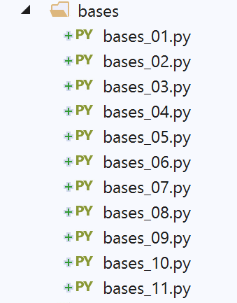

3. Noções básicas de Python

3.1. Script [bases_01]: Operações básicas
O script [bases_01] apresenta as funcionalidades básicas do Python.
Comentários
- linha 2: a palavra-chave def define uma função;
- linha 2: a função recebe o parâmetro [string]. O tipo do parâmetro não é especificado. O Python utiliza exclusivamente a passagem por valor. Isto varia consoante os dados:
- para um tipo simples (número, booleano, etc.), este valor é o valor encapsulado pelos dados (4, True, etc.);
- para um tipo complexo (lista, classe, etc.), este valor é o endereço dos dados;
- linhas 3–4: o corpo da função. Está recuado uma tabulação para a direita. É este recuo, combinado com o caractere : da instrução def, que define o corpo da função. Isto aplica-se a todas as instruções com um corpo: if, else, while, for, try, except;
- linha 4: a sintaxe utilizada aqui é [print('text1%F1text2%F2…' % data1, data2)]:
- os [%Fi] (aqui %s) são formatos de exibição:
- %s (string): para uma string;
- %d (decimal): para inteiros decimais com sinal;
- %f (float): formato decimal para números reais;
- %e (exponencial): formato exponencial para um número real;
- …
- [data1, data2…] são as expressões cujos valores pretende apresentar:
- [data1] será exibido utilizando o formato F1;
- [data2] será exibido utilizando o formato F2;
- …
- linha 10: O Python gere os tipos de variáveis internamente. Pode determinar o tipo de uma variável utilizando a função type(variável), que devolve uma variável do tipo 'type'. A expressão '%s' % (type(variável)) é uma cadeia de caracteres que representa o tipo da variável;
- linha 25: o programa principal. Este surge normalmente (mas não necessariamente) após a definição de todas as funções do script. O seu conteúdo não está indentado;
- linha 28: Em Python, as variáveis não são declaradas. O Python distingue maiúsculas de minúsculas. A variável `Nom` é diferente da variável `nom`. Uma cadeia de caracteres pode ser colocada entre aspas duplas " ou aspas simples '. Por isso, pode escrever `'dupont'` ou `"dupont"`;
- linha 34: existe uma diferença entre uma tupla (1,2,3) (repare nos parênteses) e uma lista [1,2,3] (repare nos colchetes). Uma tupla é imutável, enquanto uma lista é mutável. Em ambos os casos, o elemento número i é denotado como [i];
- Linha 40: range(n) é a tupla (0, 1, 2, …, n-1);
- linha 41: o formato %d é utilizado para inteiros com sinal;
- linha 74: len(var) é o número de elementos na coleção var (tupla, lista, dicionário, etc.);
- linha 84: a estrutura [for in …] permite iterar sobre uma estrutura iterável. Listas e tuplas são elementos iteráveis;
- linha 86: os outros operadores booleanos são or e not;
- linha 93: soma os números maiores que 0 na lista;
A saída no ecrã é a seguinte:
C:\Data\st-2020\dev\python\cours-2020\python3-flask-2020\venv\Scripts\python.exe C:/Data/st-2020/dev/python/cours-2020/python3-flask-2020/bases/bases_01.py
nom=dupont
liste[0]=un
liste[1]=deux
liste[2]=3
liste[3]=4
[chaine1,chaine2,chaine1chaine2]
chaine=chaine1
type[4]=<class 'int'>
type[chaine1]=<class 'str'>
type[['un', 'deux', 3, 4]]=<class 'list'>
type[a changé]=<class 'str'>
res1=14
(res1,res2,res3)=[un,0,100]
liste[0]=un
liste[1]=0
liste[2]=100
liste[0]=8
liste[1]=5
somme=13
Process finished with exit code 0
3.2. Script [bases_02]: Strings formatadas
O Python 3 introduziu uma nova forma de formatar cadeias de caracteres:
A sintaxe da string formatada é a seguinte:
onde:
- [expr]: uma expressão;
- [formati]: o formato da expressão [expri]. Estes formatos são os da linguagem C:
- %d: para números inteiros;
- %f: notação decimal para números reais;
- %e: notação exponencial para números reais;
- %s: para cadeias de caracteres. Este é o formato utilizado quando não é especificado nenhum formato para [expr];
- %nd, %nf, %ns: exibe [expri] em n caracteres: a cadeia de caracteres é truncada ou preenchida com espaços;
- linha 7: [04d], inteiro de 4 caracteres preenchido à esquerda com zeros;
- linha 11: [8.2f], número de ponto flutuante decimal de 8 caracteres com 2 dígitos após a vírgula decimal;
- linha 12: [.3e], um número de ponto flutuante na forma exponencial com 3 casas decimais para a mantissa;
- linha 18: [20.10s], os primeiros 10 caracteres de uma cadeia preenchidos com espaços para perfazer 20 caracteres;
Os resultados da execução são os seguintes:
3.3. Script [bases_03]: Conversões de tipos
Aqui, focamo-nos nas conversões de tipos que envolvem dados dos tipos str (string), int (inteiro), float (ponto flutuante) e bool (booleano).
São possíveis muitas conversões de tipo. Algumas podem falhar, como as das linhas 46–47, que tentam converter a cadeia de caracteres «abc» num inteiro. Tratámos o erro utilizando um bloco try/except. A forma geral deste bloco
é a seguinte:
try:
actions
except Exception as ex:
actions
finally:
actions
Se alguma das ações no bloco try lançar uma exceção (sinalizar um erro), o controlo salta imediatamente para a cláusula except. Se as ações no bloco try não lançarem uma exceção, a cláusula except é ignorada. Os atributos Exception e ex da instrução except são opcionais. Quando presentes, Exception especifica o tipo de exceção interceptada pela instrução except, e ex contém a exceção que ocorreu. Podem existir várias instruções except se pretender tratar diferentes tipos de exceções dentro do mesmo bloco try.
A instrução finally é opcional. Se estiver presente, as ações no bloco finally são sempre executadas, independentemente de ter ocorrido ou não uma exceção.
Voltaremos às exceções um pouco mais tarde.
As linhas 49–61 mostram várias tentativas de converter dados dos tipos str, int, float e NoneType para boolean. Isto é sempre possível. As regras são as seguintes:
- bool(int i) é False se i for 0, True em todos os outros casos;
- bool(float f) é False se f for 0.0, True em todos os outros casos;
- bool(str string) é False se string tiver 0 caracteres, True em todos os outros casos;
- bool(None) é False. None é um valor especial que significa que a variável existe, mas não tem valor.
A saída no ecrã é a seguinte:
Note que todos os dados são objetos, ou seja, instâncias de classes. Isto significa que podem ter métodos. Isto é demonstrado nas linhas 63–75 do código. Não estamos aqui a tentar explicar o que os métodos fazem, mas simplesmente a mostrar que existem.
3.4. Script [bases_04]: âmbito das variáveis
O script [bases_04] mostra que o Python não possui o conceito de variáveis com âmbito de bloco:
Resultados
Comentários
Os resultados mostram duas coisas:
- linha 4: a variável [i] no bloco [if] é a mesma que a variável i utilizada na linha 2;
- linha 6: a variável [j] é aquela inicializada no bloco [if];
Em algumas linguagens, onde as variáveis são declaradas, uma variável definida dentro de um bloco (como a das linhas 3–5) não é conhecida fora dele. Em Python, isso não acontece.
3.5. Script [bases_05]: Listas - 1
O script [bases_05] é o seguinte:
Notas:
- a notação array[i:j] refere-se aos elementos de i a j-1 da matriz;
- a notação [i:] refere-se aos elementos i e aos elementos subsequentes da matriz;
- a notação [:i] refere-se aos elementos de 0 a i-1 da matriz;
- linha 19: print (%s) % (list1) exibe a cadeia de caracteres: "[ list1[0], list1[2]…, list1[n-1]]";
- linha 24: a notação print ('f{list1}') faz o mesmo;
Resultados
C:\Data\st-2020\dev\python\cours-2020\python3-flask-2020\venv\Scripts\python.exe C:/Data/st-2020/dev/python/cours-2020/python3-flask-2020/bases/bases_05.py
list1 a 6 éléments
list1[0]=0
list1[1]=1
list1[2]=2
list1[3]=3
list1[4]=4
list1[5]=5
list1 a 6 éléments
0
10
2
3
4
5
[0, 10, 2, 3, 4, 5, 10, 11]
[0, 10, 2, 3, 4, 5]
[-10, -11, -12, 0, 10, 2, 3, 4, 5]
[-10, -11, -12, 100, 101, 0, 10, 2, 3, 4, 5]
[-10, -11, -12, 101, 0, 10, 2, 3, 4, 5]
Process finished with exit code 0
3.6. Script [bases_06]: listas - 2
O código anterior pode ser escrito de forma diferente (bases_06) utilizando determinados métodos de lista:
Os resultados são os mesmos da versão anterior.
3.7. script [bases_07]: o dicionário
O script [bases_07] mostra como definir e utilizar um dicionário, por vezes chamado de matriz associativa.
Notas:
- linha 11: a definição codificada de um dicionário;
- linha 15: conjoints.items() devolve a lista de pares (chave, valor) do dicionário conjoints;
- linha 20: conjoints.keys() devolve as chaves do dicionário conjoints;
- linha 25: conjoints.values() devolve os valores do dicionário conjoints;
- linha 3: husband em spouses retorna True se a chave husband existir no dicionário spouses, False caso contrário;
- linha 36: Um dicionário pode ser apresentado numa única linha.
Resultados
C:\Data\st-2020\dev\python\cours-2020\python3-flask-2020\venv\Scripts\python.exe C:/Data/st-2020/dev/python/cours-2020/python3-flask-2020/bases/bases_07.py
Nombre d'éléments du dictionnaire : 4
conjoints[Pierre]=Gisèle
conjoints[Paul]=Virginie
conjoints[Jacques]=Lucette
conjoints[Jean]=
liste des clés-------------
dict_keys(['Pierre', 'Paul', 'Jacques', 'Jean'])
liste des valeurs------------
dict_values(['Gisèle', 'Virginie', 'Lucette', ''])
La clé [Jacques] existe associée à la valeur [Lucette]
La clé [Lucette] n'existe pas
La clé [Jean] existe associée à la valeur []
Nombre d'éléments du dictionnaire : 3
{'Pierre': 'Gisèle', 'Paul': 'Virginie', 'Jacques': 'Lucette'}
type des clés : <class 'dict_keys'>
type des valeurs : <class 'dict_values'>
clés : <class 'list'>, ['Pierre', 'Paul', 'Jacques']
valeurs : <class 'list'>, ['Gisèle', 'Virginie', 'Lucette']
Process finished with exit code 0
Notas:
- Note-se que nas linhas 16–17 dos resultados, as chaves e os valores de um dicionário não formam uma lista, mas sim um tipo «dict_keys»;
- linhas 18–19: uma simples conversão de tipo converte-as para um tipo [lista];
3.8. script [bases_08]: tuplas
Uma tupla é semelhante a uma lista, mas é imutável:
Resultados
C:\Data\st-2020\dev\python\cours-2020\python3-flask-2020\venv\Scripts\python.exe C:/Data/st-2020/dev/python/cours-2020/python3-flask-2020/bases/bases_08.py
tuple1 a 6 elements
tuple1[0]=0
tuple1[1]=1
tuple1[2]=2
tuple1[3]=3
tuple1[4]=4
tuple1[5]=5
tuple1 a 6 elements
0
1
2
3
4
5
tuple1=(0, 1, 2, 3, 4, 5)
Traceback (most recent call last):
File "C:/Data/st-2020/dev/python/cours-2020/python3-flask-2020/bases/bases_08.py", line 19, in <module>
tuple1[0] = 10
TypeError: 'tuple' object does not support item assignment
Process finished with exit code 1
Notas:
- As linhas 17–20 da saída: mostram que uma tupla não pode ser modificada.
3.9. Script [bases_09]: Listas e dicionários multidimensionais
O script [bases_09] demonstra como definir e utilizar uma lista ou um dicionário multidimensional:
Comentários
- linha 7: multi[i1] é uma lista;
- linha 18: value é uma lista;
Resultados
C:\Data\st-2020\dev\python\cours-2020\python3-flask-2020\venv\Scripts\python.exe C:/Data/st-2020/dev/python/cours-2020/python3-flask-2020/bases/bases_09.py
multi[0][0]=0
multi[0][1]=1
multi[0][2]=2
multi[1][0]=10
multi[1][1]=11
multi[1][2]=12
multi[1][3]=13
multi[2][0]=20
multi[2][1]=21
multi[2][2]=22
multi[2][3]=23
multi[2][4]=24
multi=[[0, 1, 2], [10, 11, 12, 13], [20, 21, 22, 23, 24]]
multi[zéro][0]=0
multi[zéro][1]=1
multi[un][0]=10
multi[un][1]=11
multi[un][2]=12
multi[un][3]=13
multi[deux][0]=20
multi[deux][1]=21
multi[deux][2]=22
multi[deux][3]=23
multi[deux][4]=24
multi={'zéro': [0, 1], 'un': [10, 11, 12, 13], 'deux': [20, 21, 22, 23, 24]}
Process finished with exit code 0
3.10. Script [bases_10]: Ligações entre cadeias de caracteres e listas
O script [bases_10] demonstra como extrair elementos de uma cadeia de caracteres, separados por um delimitador comum, para uma lista.
Notas:
- linha 3: o método string.split(separator) divide a string string em elementos separados pelo separador e devolve-os como uma lista. Assim, a expressão '1:2:3:4'.split(":") devolve a lista ('1','2','3','4');
- linha 11: 'separator'.join(list) devolve a string 'list[0]+separator+list[1]+separator+…'.
Resultados
C:\Data\st-2020\dev\python\cours-2020\python3-flask-2020\venv\Scripts\python.exe C:/Data/st-2020/dev/python/cours-2020/python3-flask-2020/bases/bases_10.py
<class 'list'>
liste a 4 éléments
liste=['1', '2', '3', '4']
chaine2=1:2:3:4
chaine=1:2:3:4:
liste a 5 éléments
liste=['1', '2', '3', '4', '']
chaine=1:2:3:4::
liste a 6 éléments
liste=['1', '2', '3', '4', '', '']
Process finished with exit code 0
3.11. Script [bases_11]: Expressões regulares
O script [bases_11] demonstra como utilizar expressões regulares:
Notas:
- Repare no módulo [re] importado na linha 2. Este contém as funções para lidar com expressões regulares;
- linha 10: a comparação de uma cadeia de caracteres com uma expressão regular (padrão) retorna True se a cadeia corresponder ao padrão, e False caso contrário;
- linha 12: match.groups() é uma tupla cujos elementos são as partes da string que correspondem aos elementos da expressão regular entre parênteses. No padrão:
- ^.*?(\d+).*?, match.groups() será uma tupla de um elemento, porque há um conjunto de parênteses;
- ^(.*?)(\d+)(.*?)$, match.groups() será uma tupla de 3 elementos porque há três parênteses;
- linha 21: uma expressão regular literal é escrita como r"xxx". É o símbolo r que transforma a cadeia de caracteres numa expressão regular;
As expressões regulares permitem-nos validar o formato de uma cadeia de caracteres. Por exemplo, podemos verificar se uma cadeia de caracteres que representa uma data está no formato dd/mm/aa. Para tal, utilizamos um padrão e comparamos a cadeia de caracteres com esse padrão. Neste exemplo, d, m e y devem ser dígitos. O padrão para um formato de data válido é, portanto, "\d\d/\d\d/\d\d", onde o símbolo \d representa um dígito. Os símbolos que podem ser usados num padrão são os seguintes:
Caractere | Descrição |
\ | Designa o caractere seguinte como um caractere especial ou literal. Por exemplo, "n" corresponde ao caractere "n", enquanto "\n" corresponde a um caractere de nova linha. A sequência "\\" corresponde a "\", enquanto "\(" corresponde a "(". |
^ | Corresponde ao início da cadeia. |
$ | Corresponde ao fim da cadeia. |
* | Corresponde ao caractere anterior zero ou mais vezes. Assim, «zo*» corresponde a «z» ou «zoo». |
+ | Corresponde ao caractere anterior, uma ou mais vezes. Assim, «zo+» corresponde a «zoo», mas não a «z». |
? | Corresponde ao caractere anterior zero ou uma vez. Por exemplo, "a?ve?" corresponde a "ve" em "lever". |
. | Corresponde a qualquer caractere único, exceto o caractere de nova linha. |
(padrão) | Procura o padrão e armazena a correspondência. A subcadeia correspondente pode ser recuperada da coleção match.groups(). Para encontrar correspondências com caracteres dentro de parênteses ( ), utilize "\(" ou "\)". |
x|y | Corresponde a x ou a y. Por exemplo, "z|foot" corresponde a "z" ou a "foot". "(z|f)oo" corresponde a "zoo" ou a "foo". |
{n} | n é um número inteiro não negativo. Corresponde exatamente a n ocorrências do caractere. Por exemplo, "o{2}" não corresponde a "o" em "Bob", mas corresponde aos dois primeiros "o"s em "fooooot". |
{n,} | n é um número inteiro não negativo. Corresponde a pelo menos n ocorrências do caractere. Por exemplo, "o{2,}" não corresponde a "o" em "Bob", mas corresponde a todos os "o"s em "fooooot". "o{1,}" é equivalente a "o+" e "o{0,}" é equivalente a "o*". |
{n,m} | m e n são números inteiros não negativos. Corresponde a, no mínimo, n e, no máximo, m ocorrências do caractere. Por exemplo, "o{1,3}" corresponde aos primeiros três "o"s em "foooooot" e "o{0,1}" é equivalente a "o?". |
[xyz] | Conjunto de caracteres. Corresponde a qualquer um dos caracteres especificados. Por exemplo, "[abc]" corresponde a "a" em "plat". |
[^xyz] | Conjunto de caracteres negativo. Corresponde a qualquer caractere não listado. Por exemplo, "[^abc]" corresponde a "p" em "plat". |
[a-z] | Intervalo de caracteres. Corresponde a qualquer caractere no intervalo especificado. Por exemplo, "[a-z]" corresponde a qualquer caractere alfabético minúsculo entre "a" e "z". |
[^m-z] | Intervalo de caracteres negativos. Corresponde a qualquer caractere que não esteja no intervalo especificado. Por exemplo, "[^m-z]" corresponde a qualquer caractere que não esteja entre "m" e "z". |
\b | Corresponde a um limite de palavra, ou seja, a posição entre uma palavra e um espaço. Por exemplo, "er\b" corresponde a "er" em "lever", mas não a "er" em "verb". |
\B | Corresponde a um limite que não representa uma palavra. "en*t\B" corresponde a "ent" em "bien entendu". |
\d | Corresponde a um caractere que representa um dígito. Equivalente a [0-9]. |
\D | Corresponde a um caractere que não seja um dígito. Equivalente a [^0-9]. |
\f | Corresponde a um caractere de quebra de linha. |
\n | Equivalente a um caractere de nova linha. |
\r | Equivalente a um caractere de retorno do carro. |
\s | Corresponde a qualquer espaço em branco, incluindo espaço, tabulação, quebra de página, etc. Equivalente a "[ \f\n\r\t\v]". |
\S | Corresponde a qualquer caractere que não seja de espaço em branco. Equivalente a "[^ \f\n\r\t\v]". |
\t | Corresponde a um caractere de tabulação. |
\v | Corresponde a um caractere de tabulação vertical. |
\w | Corresponde a qualquer caractere que represente uma palavra, incluindo o sublinhado. Equivalente a "[A-Za-z0-9_]". |
\W | Corresponde a qualquer caractere que não represente uma palavra. Equivalente a "[^A-Za-z0-9_]". |
\num | Corresponde a num, onde num é um número inteiro positivo. Refere-se a correspondências armazenadas. Por exemplo, "(.)\1" corresponde a dois caracteres idênticos consecutivos. |
\n | Corresponde a n, onde n é um valor de escape octal. Os valores de escape octais devem consistir em 1, 2 ou 3 dígitos. Por exemplo, "\11" e "\011" correspondem ambos a um caractere de tabulação. "\0011" é equivalente a "\001" & "1". Os valores de escape octais não devem exceder 256. Se excederem, apenas os dois primeiros dígitos são tidos em conta na expressão. Permite que os códigos ASCII sejam utilizados em expressões regulares. |
\xn | Corresponde a n, onde n é um valor de escape hexadecimal. Os valores de escape hexadecimais devem consistir em exatamente dois dígitos. Por exemplo, "\x41" corresponde a "A". "\x041" é equivalente a "\x04" e "1". Permite a utilização de códigos ASCII em expressões regulares. |
Um elemento num padrão pode aparecer uma ou várias vezes. Vejamos alguns exemplos envolvendo o símbolo \d, que representa um único dígito:
padrão | significado |
\d | um dígito |
\d? | 0 ou 1 dígito |
\d* | 0 ou mais dígitos |
\d+ | 1 ou mais dígitos |
\d{2} | 2 dígitos |
\d{3,} | pelo menos 3 dígitos |
\d{5,7} | entre 5 e 7 dígitos |
Agora, imaginemos um modelo capaz de descrever o formato esperado para uma cadeia de caracteres:
cadeia de caracteres alvo | padrão |
uma data no formato dd/mm/aa | \d{2}/\d{2}/\d{2} |
uma hora no formato hh:mm:ss | \d{2}:\d{2}:\d{2} |
um inteiro sem sinal | \d+ |
uma sequência de espaços, que pode estar vazia | \s* |
um inteiro sem sinal que pode ser precedido ou seguido por espaços | \s*\d+\s* |
um inteiro que pode ser assinado e precedido ou seguido por espaços | \s*[+|-]?\s*\d+\s* |
um número real sem sinal que pode ser precedido ou seguido por espaços | \s*\d+(.\d*)?\s* |
um número real que pode ser assinado e precedido ou seguido por espaços | \s*[+-]?\s*\d+(.\d*)?\s* |
uma cadeia de caracteres que contenha a palavra «just» | \bjuste\b |
Pode especificar onde procurar o padrão na cadeia de caracteres:
padrão | significado |
^padrão | o padrão inicia a cadeia |
padrão$ | o padrão termina a cadeia |
^padrão$ | o padrão inicia e termina a cadeia |
padrão | o padrão é procurado em qualquer parte da cadeia, começando pelo início. |
Padrão procurado | padrão |
uma cadeia que termine com um ponto de exclamação | !$ |
uma sequência que termina com um ponto | \.$ |
uma sequência que começa com // | ^// |
uma cadeia composta por uma única palavra, opcionalmente precedida ou seguida por espaços | ^\s*\w+\s*$ |
uma cadeia composta por duas palavras, opcionalmente seguida ou precedida por espaços | ^\s*\w+\s*\w+\s*$ |
uma cadeia que contém a palavra secret | \bsecret\b |
Os subpadrões de um padrão podem ser «extraídos». Assim, não só podemos verificar se uma cadeia corresponde a um determinado padrão, como também podemos extrair dessa cadeia os elementos correspondentes aos subpadrões do padrão que foram colocados entre parênteses. Por exemplo, se analisarmos uma cadeia de caracteres que contenha uma data no formato dd/mm/aa e quisermos extrair os componentes dd, mm e aa dessa data, usaríamos o padrão (\d\d)/(\d\d)/(\d\d).
Resultados do script
C:\Data\st-2020\dev\python\cours-2020\python3-flask-2020\venv\Scripts\python.exe C:/Data/st-2020/dev/python/cours-2020/python3-flask-2020/bases/bases_11.py
Résultats(xyz1234abcd,^.*?(\d+).*?$)
('1234',)
Résultats(12 34,^.*?(\d+).*?$)
('12',)
Résultats(abcd,^.*?(\d+).*?$)
La chaîne [abcd] ne correspond pas au modèle [^.*?(\d+).*?$]
Résultats(xyz1234abcd,^(.*?)(\d+)(.*?)$)
('xyz', '1234', 'abcd')
Résultats(12 34,^(.*?)(\d+)(.*?)$)
('', '12', ' 34')
Résultats(abcd,^(.*?)(\d+)(.*?)$)
La chaîne [abcd] ne correspond pas au modèle [^(.*?)(\d+)(.*?)$]
Résultats(10/05/97,^\s*(\d\d)\/(\d\d)\/(\d\d)\s*$)
('10', '05', '97')
Résultats( 04/04/01 ,^\s*(\d\d)\/(\d\d)\/(\d\d)\s*$)
('04', '04', '01')
Résultats(5/1/01,^\s*(\d\d)\/(\d\d)\/(\d\d)\s*$)
La chaîne [5/1/01] ne correspond pas au modèle [^\s*(\d\d)\/(\d\d)\/(\d\d)\s*$]
Résultats(187.8,^\s*([+-]?)\s*(\d+\.\d*|\.\d+|\d+)\s*$)
('', '187.8')
Résultats(-0.6,^\s*([+-]?)\s*(\d+\.\d*|\.\d+|\d+)\s*$)
('-', '0.6')
Résultats(4,^\s*([+-]?)\s*(\d+\.\d*|\.\d+|\d+)\s*$)
('', '4')
Résultats(.6,^\s*([+-]?)\s*(\d+\.\d*|\.\d+|\d+)\s*$)
('', '.6')
Résultats(4.,^\s*([+-]?)\s*(\d+\.\d*|\.\d+|\d+)\s*$)
('', '4.')
Résultats( + 4,^\s*([+-]?)\s*(\d+\.\d*|\.\d+|\d+)\s*$)
('+', '4')
Process finished with exit code 0